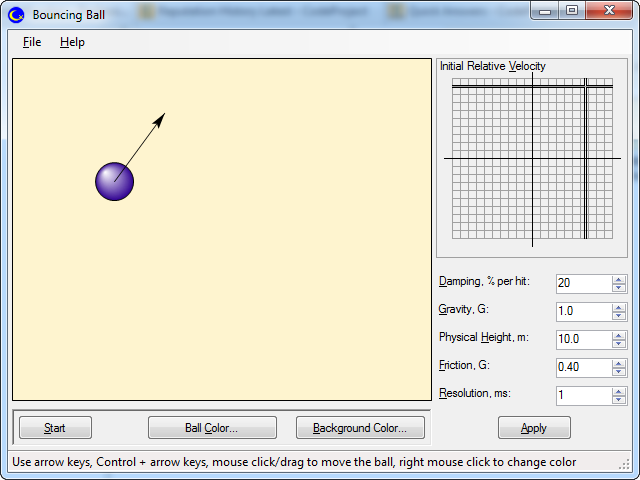

Epigraph:
There are three things in the world you could watch forever: flames flickering in a fire, water flowing in a brook and a blonde trying to park.
- V. Pupkin, engineer
Contents
Motivation
The disciplines related to the problem of the preservation of the Earth’s biodiversity operate the concept of hot spot. If we could preserve all the living species in only 36 limited area spots in the world, it would preserve some 60% of the species on the whole Earth.
My experience answering the questions of the CodeProject enquirers (19,614 answers at the moment of writing) shows that most of those questions can be answered by comprehensive explanation of the techniques in just 3-5 areas. This way, I came to the idea that I can answer roughly ⅕-⅓ beginners’ questions I ever faced here, in just one article. Moreover, I found that I can write just one application to illustrate the techniques and answers.
This application called “Bouncing Ball” represents the simple animated 2D physical model: a ball in a uniform gravitation field bouncing off the four walls, with some energy losses, and so on.
So, let’s start…
Questions Addressed
- I use
Graphics to draw on my form, but when I minimize the form and show it again, all graphics disappears. What do I do wrong? [★]
- How to move image in the
PictureBox? [★]
- I need to print graphics shown in my form and save it as a bitmap. If not using
PictureBox, how can I do it? [★]
- I want to connect controls placed on my Form with lines representing a graph but have many problems with matching form coordinates with control coordinates. How can I do it? [★]
- I'm suddenly getting a “To prevent possible data loss before loading the designer, the following errors must be resolved” error when trying to display a form. The project compiles and runs fine, but I cannot modify the form. I cannot find out and fix the problem using the debugger, because when I execute the application, I never have an exception. What can I do? [★]
- I developed a custom control with graphics. When I click on it or try to navigate to it using Tab, it does not focus. What can be wrong? [★]
- I am using thread for calculations and need to output the results of calculation in the text box on my form, but when I try to assign a value to its
Text property, I get exception “Cross-thread operation not valid”. What's going wrong? [★]
- When I run my application and close it, Visual Studio should the process status “Running” until I click the menu item “Stop Debugging”. If I run the application in the stand-along mode, Windows Task Manager shows that the process is still executing after I close the main window. If I start and close the same application several times, Task manager shows several application instances. How can I avoid it? [★]
- I have an animated control used to mimic simple robot motion: rotation around one axis. The time of the whole motion is calculated based on the actual robot speed. This calculation computes the time interval between the timer tick, the amount of angular motion between ticks and the number of ticks needed to complete the motion. Not only the animated motion goes out of sync with the mechanical robot, it also does not look smooth. Sometimes the object gets frozen for some random period of time, sometimes it jumps suddenly. How to achieve smooth animation? [★]
- How can I avoid termination of my application because of some unhandled exception? [★]
- How to define application version? How can I use it? [★]
- I'm trying to save my data in the folder “C:\Windows\MyApplication”, but it does not work. How to do it? [★]
- How to locate my data file found in the directory where my application is located? [★]
- How can I call my method in another thread? [★]
- How can I print my form? [★]
The answers are placed separately, after the description of the illustrating application used to explain all the techniques. Click on [★] to see an answer to a corresponding question.
Illustrating Application: Bouncing Ball
I’ve chosen a fairly simple mechanical motion model which covers nearly all aspects of computer animation and interactive graphics, in interaction. It produces realistic impression of the mechanical motion, which evokes the mood depicted by the joke taken as the epigraph.
At the same time, this is probably the most primitive example of realistic mechanical motion — the prolonged motion of a single object using just two degrees of freedom. It allows me to demonstrate all programming aspects of the animation and interactive graphics and cover all potential problems in a very simple, well defined way.
Application Description
The typical look of the application is shown in the picture on the top. The picture is shown at the moment before starting the motion, which represents the concept of frozen time.
The application represents the ball moving in 2D space in some uniform gravitational field, which can collide with the walls of a rectangular area; and the collisions are not perfectly elastic or inelastic; instead, some part of the ball’s kinetic energy is lost in each collision; in the present model, a fixed percentage of energy loss can be specified. This mechanism, expressed in the form of dumping percentage to be specified, is one of the motion dumping mechanisms.
The second mechanism of dumping taken into account is in the present motion model is the surface friction, which comes into play when the ball stops bouncing and comes into the contact with the bottom surface. The moment of transition from bouncing to friction is the most delicate aspect of the model. In the simplest model, the ball would bounce infinitely. The advanced model should take into account deformation of the ball during collision and the characteristic scale of the microscopic imperfections of the surface of spatial range of molecular forces responsible for friction in the friction model. Also, the rotation of the ball should be taken into account. Yes, such as simple behavior as the transition of the bouncing ball to the motion in the contact with the surface really depends on such delicate factors. At the same time, the delicate detail of such transition is not really noticeable in the seemingly realistic motion, which can be shown in some simplified model. I’ll explain this detail in the section “Physics”.
For our purpose, it’s more important that the animated motion depends on two factors: the laws of mechanics which fully dictate the lifetime behavior of any mechanical system, according to Laplacean determinism and the intervention of the user. The user, in perfect accordance with the principle of “Deus ex machina”, can stop and restart the motion, change the geometry/sizes of the room, velocity of the ball and physical parameters of the environment, and, after all, terminate the application or start it. So, the collaboration and interaction of these two sources of causality will be the main subject of our little study.
Rendering Graphics
The first natural step in the development should be the graphical rendering of the screen, depending on current state of the system, without any regards to the reason of getting into this state. Ultimately, the state will depend on the set of motion parameters entered by a user in a form, the sizes of the main form, and the full prehistory of the motion, starting from the initial coordinates and the vector speed of the ball.
The main idea of the graphics rendering is directly expressed in the fragment of the application:
partial class BallScene : Control {
protected override void OnPaint(PaintEventArgs e) {
Draw(e.Graphics, null);
}
}
Here, we created a custom control class BallScene, derived from System.Windows.Forms.Control and define how its graphics is rendered by overriding its virtual method OnPaint.
I want to focus the reader’s attention for one little fact: inherited OnPaint is not called. Why? This is important enough to understand. The inherited Control.Paint method performs the invocation of the event System.Windows.Forms.Control.OnPaint. If inherited OnPaint is not called, the event handlers won’t be invoked. Alternatively, we might choose not to override OnPaint. Instead, we could handle the event Paint and do the same in the handler. In our case, it does not make much sense. We need to create a control class anyway (apparently, because it carries all the rendering logics), so overriding of the method OnPaint would be the easiest option. Moreover, in case we don’t need to call the inherited method, it is slightly better for the performance.
What of the two mechanisms to choose? It depends, and it does not make a lot of difference. Dealing with the event Paint can be useful if we simply use existing class, instead of deriving any class and writing our own. In this case, we simply would not have any content for the overridden OnPaint method. From the other hand, supporting of the event Paint can be critically important if we had to supply a library of control classes for other users. In rare cases, we may want to block any custom rendering by the user of the class. In all the other cases, this is what the user expects.
At this point, I omit the detail of the function Draw. It just uses the graphical primitives represented by the System.Drawing.Graphics method to draw the scene, depending on current state of the whole system. Abstracting out of this Draw method is extremely important; I’ll explain it in the section Printing, Export of Graphics and Graphics Rendering is the Same Thing.
Interactive Graphics
As the first step, I’ve chosen to reflect the changes in the parameters of the scene entered by the user. Not only this is the most natural and the easiest next step, but this is the step I would recommend for the development of many similar applications. The thing is: this is the most convenient point for intermediate testing, to make sure the pure rendering part of the problem is done correctly. It will be much harder to validate when we introduce animation. At this step, I prototyped the motion of the ball by interactive mouse click and keyboard events. From this development phase, the ball position can be controlled by the user manually. Later on, when the animation was added, the manual control of the ball location allowed the user to momentarily intercept the ball motion, to change its location to an arbitrary location within the current room space.
The essence of interactive behavior is extremely simple. We need to have the data layer of the physical model, fully abstracted from graphics or UI. The implementation of the method Draw (called in the code fragment shown above) takes all the data and draws the scene accordingly. Now, what happens when the user, using the UI, changes some of those parameters? Apparently, the scene should be re-rendered, fully or partially. This is done, in response to any of such events, and then the call to the method OnPaint should be triggered somehow. This is done using one of the methods Control.Invalidate. This way, the whole control can be invalidated, or the invalidation may touch only some area on the scene.
Invalidation mechanism is exactly what we need. It is highly optimized in Windows. It is based on the Windows API ON_PAINT message. It’s good to understand that this particular message is handled differently by Windows, bypassing the usual message dispatching mechanism. In particular, if several invalidations occur before the first invalidation is reflected on rendering, Windows accumulate the invalidation requests in a single subset of the control’s client area point set, apparently, by performing set disjunction (OR) operation. This way, redundant calls to the method OnPaint are eliminated.
In fact, we already covered the main techniques needed for animation and interactive graphics. With animation, everything goes in the same way. We simply need to change data and re-render the scene frame by frame. We only need to add the time dimension to the problem and figure out, how the state of the system should be modified in time.
Animated Graphics
To overview the animation if its main part, it’s enough to put together the following parts: 1) we need to program the change in the system state depending on the previous state and time, taking into account the mechanical parameters of the system, possibly dynamically modified by the user; in computer games, for example, it is called “Physics”; 2) create the sequence of the events when a frame is changed (read: “Invalidate”); 3) for each frame, pick up the current time from the system clock and, depending on the time value, apply “physics” to the current state, to obtain the system state for the next frame to be rendered.
At this point, a good next step would be getting to threading. By the way, why not timer? Let’s see…
Why Not Timer?
Why not a timer, indeed? Well, just because timers are really bad for the purpose, dealing with them is extremely complicated and unreliable, despite of the ease of getting first seemingly working results. The discussion of timers would take us too far from the topics of the present article, but I have to explain the idea. The main misconception is the idea that the timers can deliver periodic events. Ideally, it would be good, but in reality this is not exactly so. First of all, there is a number of different timers in the .NET BCL, and I just have to warn the readers about one particular one which never should be used: System.Windows.Forms.Timer. It simply should never be used for anything even remotely periodic, due to its prohibitively bad quality. Why having this type of timer at all; is it good for anything? Yes, its benefit is the ease of use: the handler of its Tick event is invoked in the UI thread, which eliminate the need of the cross-thread invocation needed with other threads. But how it can be used with so bad accuracy? One simple example is the delay in showing, for example, a splash window, where the exact timing is not critical at all.
Another, perhaps even bigger problem, the one related to all the timers, is the complications related to the reliability of the code. Most likely, all the OS capable of running .NET applications are not real-time systems, as most of the OS in the world. In practice, the periodic sequence of events is a myth. Despite the accuracy of the timing, in all non-real-time multithreaded systems, the time latency between the hardware timer event and actual, for example, rendering, is a non-deterministic value. More importantly, the time of event handling is also non-deterministic. Did you ever try to deal with the situation, when next timer event is invoked before the event handler called by the previous event is still in progress? I think, this is enough to say, but the worst thing is the non-deterministic nature of this problem. The application may seem to work for a long time, failing eventually in the most embarrassing situation.
The real question is: do we really need strictly periodic sequence of the events? The answer is: no, not for animation. It’s enough to know accurate current time at the moment of rendering of the frame. With a thread running in some loop, not only we can deliver better accuracy, but some time differences between loop iteration won’t be noticeable. Below, I’ll explain how a thread should deal with time.
Having said that, we can move to the design of threading.
Thread Wrapper
First of all, the main idea of the threading design for this application and a wide class of application is this: we need just two threads: one is the main thread running the UI, or UI thread, and another one should represent the scenario of the motion and implement all the “Physics”, frame by frame. Let me call this second thread animation thread. The key aspect here is the lifetime of the animation thread. It should be created somewhere at the very beginning of the application lifetime (when the main form is already rendered though), only once, and terminated at the very end, only once. During the whole application the thread should be reused, even if the motion is aborted or otherwise stopped. Also, it can be effectively paused/resumed through the mechanism of throttling. This design presents a lot of benefits, first of all, reliability. And it is not over-simplified, for its purpose.
The thread wrapper concept deserves a separate article. In the present implementation, we don’t need to develop the most universal form of such class, so it can be animation-specific. This class is so important, that it would be good to show its complete code:
namespace BouncingBall.Thread {
using System;
using System.Drawing;
using System.Threading;
partial class ThreadWrapper {
internal class MotionEventArgs : EventArgs {
internal MotionEventArgs(PointF coordinates) { Coordinates = coordinates; }
internal PointF Coordinates { get; set; }
}
internal class ExceptionEventArgs : EventArgs {
internal ExceptionEventArgs(Exception exception) { Exception = exception; }
internal Exception Exception { get; set; }
}
internal ThreadWrapper() {
Thread = new Thread(Body);
}
internal void Start(bool letGo) {
Thread.Start();
if (!letGo) return;
InnerLoopEvent.Set();
OuterLoopEvent.Set();
}
internal void Abort() {
Thread.Abort();
}
internal void Pause() {
InnerLoopEvent.Reset();
OuterLoopEvent.Reset();
}
internal void Resume() {
InnerLoopEvent.Set();
OuterLoopEvent.Set();
}
internal event EventHandler<MotionEventArgs> CoordinatesChanged;
internal event EventHandler<ExceptionEventArgs> ExceptionThrown;
internal event EventHandler Paused;
void Body() {
while (true) {
OuterLoopEvent.WaitOne();
try {
InnerLoop();
} catch (ThreadAbortException) {
} catch (Exception exception) {
if (ExceptionThrown != null)
ExceptionThrown.Invoke(this, new ExceptionEventArgs(exception));
}
}
}
void SelfPause() {
Pause();
if (Paused != null)
Paused.Invoke(this, new EventArgs());
}
ThreadExchangeData exchangeData;
internal ThreadExchangeData ExchangeData {
get { lock (SyncObject) return exchangeData; }
set { lock (SyncObject) exchangeData = value; }
}
PointF ballPosition;
internal PointF BallPosition {
get { lock (PositionSyncObject) return ballPosition; }
set {
lock (PositionSyncObject) {
isBallPositionDirty = true;
ballPosition = value;
}
}
}
Thread Thread;
ManualResetEvent InnerLoopEvent = new ManualResetEvent(false);
ManualResetEvent OuterLoopEvent = new ManualResetEvent(false);
object SyncObject = new object();
object PositionSyncObject = new object();
bool isBallPositionDirty;
}
}
Note that the class is partial, so some members are not shown here (CurrentState, State, InnerLoop, and InvertAndDampVelocity; see the full source code provided, the file “ThreadWrapper.InnerLoop.cs”).
The most important aspect of the thread wrapper is that it provides encapsulation of exchange of the data and event invocation and, hence, of the thread synchronization.
One key concept is the use of the System.Threading.Thread constructor with the virtual method Body. Here is the idea: the method passed to the thread constructor can itself have a parameter. It can be done with the constructor using the parameters of the type ParameterizedThreadStart. Is it good or bad? This is very bad! The problem is: this delegate type accepts a single untyped parameter, more exactly, of the type System.Object. This lack of typing, in practice, requires type casting, potentially dangerous, error-prone and not well maintainable thing. At the same time, it’s important to note that thread constructors accept delegate instances, which means both static and non-static (instance) methods. When we pass an instance method of the wrapper instance itself, all its members are passed to the delegate in a single (implicit) call parameter: this. It comprehensively solves all the problems of passing parameters during construction of a thread instance. ParameterizedThreadStart would be simply pointless.
Another important aspect is the thread throttling using the event handler objects: System.Threading.EventWaitHandle or its two specialized forms, System.Threading.AutoResetEvent and System.Threading.ManualResetEvent. Note that the modern thread class does not have such methods as Pause or Resume; they have been deprecated and removed as extremely dangerous. Their danger is pretty obvious, but explanation of this would go beyond the topic of this article. In contrast to such methods, EventWaitHandle wait method put a calling thread in a wait state only in some accurately chosen points in code, where is it perfectly safe to do so. In a wait state, a calling thread does not spend any CPU time. When it calls a wait method on a non-signaled event handle object, the calling thread is preempted by other threads and not scheduled to execution until it is awaken by some events (Abort, Interrupt methods called by any other thread, timeout and, importantly, by the event of signaling of the corresponding EventWaitHandle instance).
“Real” Time
I already explained the main idea: we don’t really need strictly periodic time frame between animation frames.
The most suitable timing facility for the animation is the class System.Diagnostics.Stopwatch. It provides the best accuracy. Note that we only need relative time, not absolute calendar time.
Now, I will put forward not very usual or even obvious idea which is applicable to our specific problem: the use of two separate instances of this class: one for X motion, and another one for Y motion. Yes, I have separate “X-time” and “Y-time”. The thing is: the mechanical motion in a uniform gravitation field (Y direction, in our case), and in many other simple situations, is fully independent for the two directions, so the whole motion is two independent tasks.
This is the basic scenario of using the Stopwatch:
using Stopwatch = System.Diagnostics.Stopwatch;
partial class ThreadWrapper {
void InnerLoop() {
Stopwatch watchX = new Stopwatch();
Stopwatch watchY = new Stopwatch();
while (true) {
InnerLoopEvent.WaitOne();
ThreadExchangeData data = ExchangeData;
lock (SyncObject) {
watchX.Stop(); watchY.Stop();
}
lock (PositionSyncObject)
watchX.Reset(); watchY.Reset();
watchX.Start(); watchY.Start();
double timeX = watchX.Elapsed.TotalSeconds;
double timeY = watchY.Elapsed.TotalSeconds;
watchX.Reset(); watchX.Start();
}
}
This way, we use actually elapsed time from the previous animation frame and current coordinates in the configuration space of the system (coordinates and velocities, in the present problem) to calculate the coordinates for next frame.
Some variations of the actual elapsed time don’t break the impression of the smooth motion; for the spectator, it’s important that a ball is rendered in right space for the present moment of time in each animation frame.
UI Thread Invocation
I already described the graphical rendering and the mechanism for showing the motion via the System.Drawing.Graphics.Invalidate mechanism. It would be quite enough for the interactive motion.
For the animation, which is the motion controlled by a separate thread, not a UI thread but the animation thread, there is an additional problem: one cannot call anything related to UI from non-UI thread. Instead, one would need to use the method Invoke or BeginInvoke of System.Windows.Threading.Dispatcher (for both Forms and WPF) or System.Windows.Forms.Control (Forms only).
But what defines the UI thread? See also this answer.
Control.Invoke and Control.BeginInvoke work in any thread. The functionality is completely insensitive to the origin of the thread: it can be UI thread, a thread created through System.Threading.Thread constructor, a thread from the thread pool or a thread created by System.ComponentModel.BackgroundWorker.
The purpose of this API is to dispatch a call of the delegate instance on the UI thread. If the call to Control.Invoke or Control.BeginInvoke is done in UI thread, the delegate will be called immediately. As the invocation mechanism is redundant in this case, this can be avoided by checking the predicate property Control.InvokeRequired. If invocation mechanism is not required, regular call of control’s method or property is preferred. This predicate is only needed for some generalization of some call which can be done from different threads: sometimes in UI thread, sometimes not. In many cases the developer knows for sure that the delegate will be called on from non-UI thread only; in this case Control.InvokeRequired is not needed, as invocation should be used anyway.
Now, UI libraries (both System.Windows.Forms and WPF) are designed in such a way that all calls to all UI controls and Application should never be done directly, but should be dispatched to the UI thread. There is another interface to this functionality common for Forms and FPW, with highly extended functionality: System.Windows.Threading.Dispatcher, it also has Invoke and BeginInvoke methods, several overloads. The instance of Dispatcher can be obtained using the static property System.Windows.Threading.Dispatcher.CurrentDispatcher (this property either instantiates new instance or use previously created instance of Dispatcher).
Now, Dispatcher methods, Control.Invoke and Control.BeginInvoke use the same mechanism of dispatching a delegate to the UI thread: the delegate instance and instances of actual calling parameters are put to some queue, which is read by the WPF or System.Windows.Forms UI thread. In main UI cycle, this data is removed from the queue and used to make an actual call. Each thread instance has the invocation list; each element of invocation list encapsulates delegate entry point, this parameter used to access the instance of the declaring class of the method (if the method is non-static) and all instances of call parameters. All this data is used for the actual call.
Now we came to the difference between Invoke and BeginInvoke. For Invoke, return value obtained from the call is returned to caller of Invoke. It means that the thread synchronization is blocking for the calling non-UI thread.
In contrast, BeginInvoke returns immediately with the result of the type System.IAsyncResult, so this call itself in non-blocking. This invocation method should be used in most cases, especially when return result is not needed; a typical example: getting UI thread showing notification from non-UI thread status.
If return result from BeginInvoke is needed, the situation is pretty complex, as result is not ready immediately, so some kind of wait is needed anyway. It is not well documented in standard help documentation. Basically, there are three ways of obtaining the result of invocation later; one of them is calling blocking EndInvoke.
There is a very popular misconception that the invocation mechanism can be used with any thread through Dispacher. This is not true. The Dispatcher really works for non-UI applications as well, but is Invoke or BeginInvoke is used; it does not do anything useful if there is no active UI thread! The call to those methods is equivalent to regular call of the delegate on the same thread.
Is it possible to use the similar mechanism on any thread? No, but it can be done on specially written custom thread using a blocking queue, when the elements of the queue are delegate instances. A complete code with usage samples can be found in my Tips/Tricks article: Simple Blocking Queue for Thread Communication and Inter-thread Invocation. The look at the source code can give a pretty good idea on how the UI thread invocation mechanism works.
For the present bouncing ball application, I added the demonstration of the use of the WPF System.Windows.Threading.Dispatcher, with the sheer purpose of the demonstration of the technique, functionally equivalent to the use of System.Windows.Forms.Control.Invoke or System.Windows.Forms.Control.BeginInvoke, just because it is less obvious, as well as the whole possibility of using some WPF assemblies in a System.Windows.Forms application. Here is the chain of steps showing how it can be done. First of all, the application needs to reference the only WPF assembly, WindowsBase. Then, in the main application form, I use the class System.Windows.Threading.Dispatcher, add a reference to a current dispatcher instance and use it:
using Dispatcher = System.Windows.Threading.Dispatcher;
Dispatcher Dispatcher;
Dispatcher = Dispatcher.CurrentDispatcher;
Thread.ThreadWrapper Thread = new Thread.ThreadWrapper();
Thread.CoordinatesChanged += (sender, eventArgs) => {
System.Action action = () => {
Scene.Position =
new System.Drawing.PointF(eventArgs.Coordinates.X, eventArgs.Coordinates.Y);
};
Dispatcher.Invoke(action);
};
Note the commented out Invoke(action), which is a call to System.Windows.Forms.Control.Invoke, which could be used instead of Dispatcher.Invoke(action).
Now, in the body of the ThreadWrapper Thread, which is run by the animation thread, the ball location is recalculated frame by frame. In a loop, the event CoordinatesChanged is invoked (if there is at least one handler). This event is shown in a code sample above. The handler is added to this event in the main form class, which plays the role of the application singleton which contains the single instance of the thread wrapper of the animation thread. This handler modifies the property Scene.Position. The setter of this property calls the method Invalidate of the instance Scene of the class BallScene:
partial class BallScene : Control {
public PointF Position {
get { return position; }
set {
if (position == value) return;
position = FixPosition(value);
Invalidate();
}
}
}
The very first code sample shows the other fragment of the same class. This way, we have the full cycle of the frame update; it starts from changing of the model data in the animation thread; that change leads to the invocation of the graphic invalidation method through UI thread invocation mechanism.
Physics
Again, by “physics” I mean the term used in the computer game development.
As I explained above, the only difficulty of the physical model is the transition between bouncing and motion of the ball on the surface of the floor affected by the friction, which usually could be considered as a fixed force. In out user-edited data, it is expressed in the units of G (gravitational acceleration). If we tried to build a really detailed and accurate physical model, we would see that such transition is not a single point. For certain period of time, bouncing motion would combine with the friction between the floor and the ball, with different degree of slippage. Eventually, friction would come to zero slippage, and the bouncing could be considered fully dumped. Moreover, friction would cause the ball to roll, so the friction would be some combination of the rolling friction and sliding friction, so the friction could not be considered constant; and the moment of inertia of a ball would come to play.
For a simple model, such complicated detail would look like some overkill. But the attempt to simplify model faces this difficulty: the criterion of the end of the bouncing mode and “friction mode”, which I called frictionMode in the code.
To solve this problem, I first simplified the calculation of the collision with the wall. Let’s use the fact that the wall (first of all, the floor) simply inverts the vertical coordinate and velocity, if we consider floor coordinate to be zero. The problem of the calculation is that the state of the model in the configuration space is defined only by frames. In other words, the time of the collision with the floor can come at some time between animation frames, so an additional point in time should be introduced, the time of the collision. At this point, let’s cheat just a bit. Let’s simply calculate the state in the next frame, as if the floor did not exist. Naturally, eventually it will give us the ball coordinates below the floor. The same can happen with any of the walls, but we need to take a special care about the floor, where the friction mode may occur. If such below-the-floor location is detected, we can simply invert the vertical coordinate and velocity and show the ball symmetrically under the floor. It’s easy to see, that in case of fine tiny bouncing (some condition close to the transition to the friction mode), the inaccuracy of this approximation can formally give us negative kinetic energy. We can use this condition as a condition for the transition to the friction mode. In friction mode, we consider the ball motion as purely horizontal; it continues under the constant friction force until the velocity drops to zero or below in the direction of current motion (note that in friction mode the ball can still bounce off the vertical walls).
Interestingly, this rather rough trick gives am impression of very smooth and realistic motion.
Again, we consider vertical and horizontal motion separately, so we can have vertical kinetic and potential energy, and horizontal kinetic energy, separately. This is how the check for friction mode looks:
initialY = 2d * physicsMaxY - y;
y = initialY;
double potential = localData.Gravity * (physicsMaxY - y);
yEnergy *= 1d - localData.Damping;
double kinetic = (yEnergy - potential);
if (kinetic < 0 && localData.Friction > 0) {
kinetic = 0;
frictionMode = true;
}
(See “ThreadWrapper.InnerLoop.cs”.)
A Word of Warning: Thread Termination
Let’s look at the end of the life cycle of the process of the Bouncing Ball application. This is the overridden method OnFormClosing of its main form:
protected override void OnFormClosing(FormClosingEventArgs e) {
Thread.Abort();
base.OnFormClosing(e);
}
Here, Thread.Abort() is the call to the thread wrapper method shown above. It simply calls the method System.Threading.Thread.Abort of the underlying thread, which is the animation thread in our application.
Very often, such technique sparks some flame wars. Many people consider Thread.Abort as prohibitively dangerous. Unfortunately, such belief is often based on lack of understanding how it works; such people associate it with old bad Windows API TerminateThread. Actually, Thread.Abort is totally unrelated to TerminateThread. It uses very safe method of exception seeding. The AbortException is seeded into the thread state, so the execution jumps to the code throwing this exception, which can be caught and handled by the application user, alleviating all possible negative effects of asynchronous termination. After all, really dangerous Pause and Resume methods have been removed from .NET threads, but Abort was introduced. Basically, it is very safe, but only… for the developers who know well what happens.
And yet, I agree that this method can be really dangerous. Most serious argument is related to the possibility to abort during construction and destruction chain: in principle, the process can end up in some half-constructed state, which hardly can be recovered. However, I developed fully safe solution for such problems, which is, roughly, is based on encapsulation of Abort in a thread wrapper used to safely postpone the abort. All this matter would deserve a separate article though.
So, why using Abort is perfectly safe in this particular application? First of all, this is because it happens at the end of the application lifetime. In this particular case, the situation is just the opposite: not terminating the thread before closing the main window would be dangerous. Besides, this particular thread does nothing which could break anything. It merely access shared object in memory, representing the current state of the physical model and perform UI thread invocation used to update the picture.
What would be the alternatives? One popular alternative is the use of background threads. I would recommend using a background thread only in some rare very special cases. The only difference of background thread is that it does not hold its parent process when it terminates; in other words, the background thread is terminated automatically. And this can be really dangerous, because (in contrast to Abort) the moment of the termination of the background thread is totally out of the control of the application developer. Imagine that the thread tries to update some form when it is already closed. The behavior of the background thread is explained here.
Another alternative is the cooperative (not asynchronous) termination of a thread. Indeed, this is the safest option. A thread is given the flag (shared with some other thread(s)) which is set by another thread and tells the thread: “now terminate yourself”. This is safe because the thread can check up this flag and take the steps for termination only in some safe point of its code. Many developers think that this is the only acceptable approach. Unfortunately, there is a number of problems where such approach cannot be used at all. The discussion of such cases would go far from the topic of the present article, but I would gladly discuss them with those readers who wish to open such discussion. Besides, this approach can bring inherent performance problem.
Exceptions
Basically, all exception should be handled, ultimately, at least on the very top stack frame of each thread. The handling of all exceptions of the animation thread is shown in the code of the thread wrapper. Note that the Abort exception is also handled, but its handler does nothing. As I described above, it happens only at the end of the application lifetime.
Apparently, exceptions should not be handled too locally. The worst mistakes of some beginners is catching exceptions in all methods. Instead, the exceptions should be caught only in very few strategically chosen points of code, which I call “competence points”; where it is known by the context how to handle some specific exception types. And the top frame is a special case agnostic to the exception type.
But the exceptions in the UI is the special case. It would be good to catch and handle all the exception not on the top, but on the top level of the main even cycle of the application. Then all the exceptions could be handled in type-agnostic way, exception information is presented to the user, and then the application could continue. All non-nonsense UI frameworks have such kind of mechanism. This is how it can be done with forms:
static void Main() {
Application.EnableVisualStyles();
Application.SetUnhandledExceptionMode(UnhandledExceptionMode.CatchException);
Application.SetCompatibleTextRenderingDefault(false);
Application.Run(new FormMain());
}
When the mechanism is enabled, we need to supply the universal exception handler:
public partial class FormMain {
void ImplementSetup() {
Thread.ExceptionThrown += (sender, eventArgs) => {
Invoke(new Action(() => {
Pause();
ShowException(Resources.UiText.FormatAnimationException, eventArgs.Exception);
}));
};
}
void ShowException(string titleFormat, Exception exception) {
if (exception == null) return;
MessageBox.Show(
string.Format(
Resources.UiText.FormatException,
exception.GetType().Name, exception.Message),
string.Format(titleFormat, Application.ProductName),
MessageBoxButtons.OK,
MessageBoxIcon.Error);
}
}
We already discussed the method ImplementSetup: this is some main form method called after the form’s InitializeComponent() is called.
By the way, WPF offers a very similar mechanism.
The UI and Layout: Don’t Abuse the Designer
The abuse of the designer is a very big topic, too big to cover it here. For now, I want to cover only one aspect. Many my colleagues and CodeProject inquirers complained about one very typical situation: during development, even when everything works during runtime, they find themselves in the situation where they cannot open some form anymore in the form designer mode. They could easily fix the problem if the form could be shown in the designer, but the designer reports some exception and does not show the form. How to get out of this dead end?
The solution is amazingly simple. It is possible to make the form loading again, without breaking any already achieved functionality. First of all, it’s important to realize that this condition was a result yet another designer abuse. The designer mode and runtime mode are different. It would be the best to run as little code in the designer mode as possible.
The quick fix lies on the property System.Windows.Forms.Component.DesignMode, described here.
The solution is to put most of the runtime code under the check of this property of the System.Windows.Forms.Form and/or System.Windows.Forms.UserControl:
partial class MyForm : Form {
void DoSomething() {
if (DesignMode) return;
}
}
Adding such checks would not change any runtime functionality but will fix the problem with loading the form in the designer.
I would also strongly recommend avoiding creation of any event handlers using the designer and write all the handlers in the code, often in the form of anonymous methods, as it is shown in all my samples, but this is the whole different story, as well as many other aspects of the negative role of the overused designer.
Persistent Configuration and Data Contract
First of all, the application does not come with the installer. It represents the concept of so-called portable application. I am very glad that Microsoft has started to encourage this deployment model. Indeed, too many applications present the hassle of running the installation, giving no benefits in return, and yet a big number of them leave merciless amount of garbage in Windows registry, already heavily contaminated, without apparent provisions for removing it.
It does not mean that the present application don’t need installation and uninstallation. It actually “installs” itself when the user closes the application or changes some physical model parameters. It can remove all the traces (“uninstalls”) through the menu command “Clean up Persistent Configuration from the System and Exit”. I wish most software products did exactly that. Registry clean-up is really annoying.
The persistence is implemented using the Microsoft Data Contract.
Another approach, the one which is must usually used is the .NET Application Settings, but, to me, it looks too much obsolete and cumbersome to use.
Data Contract is the best and the only robust persistence (serialization) technology available in .NET. Its main feature is that is it totally non-intrusive. If one has some set of data types which form any arbitrary object graph (for XML format, not necessarily a tree), turning it to a data contract cannot break its behavior, because the developer only adds attributes to types and their members. Nothing like inheriting from special classes or implementing special interfaces is required. The persistence is totally type-agnostic. The data contract is discovered on the fly through .NET reflection. Essentially, the object graph is stored in any stream without giving the facility any type-specific information. When the data is loaded, it restore logically identical object graph in memory. This way, the technology is not only most robust, it is also the easiest to use.
Another benefit is the performance. Reflection is expensive, but it is used only once. As it is done with all .NET serialization technologies, on first run serialization creates serialization assembly on the fly, using System.Reflection.Emit, which is later re-used.
In our application, the contract is described in the file “MetadataSchema.cs”. Now, we need to choose a file used for persistent storage. This is how it is done:
static string PersistentConfigurationFileName {
get {
string applicationDataDirectory =
System.Environment.GetFolderPath(
System.Environment.SpecialFolder.LocalApplicationData);
return string.Format(Configuration.DefinitionSet.FmtUniqueFileName,
applicationDataDirectory,
System.IO.Path.DirectorySeparatorChar,
Configuration.DefinitionSet.UniqueFileNameGuid);
}
}
The method System.Environment.GetFolderPath, in combination with the enumeration type System.Environment.SpecialFolder, calculates and return different special folders, in particular, the folders for the per-user configuration data.
This is how the metadata schema instance is loaded:
internal static MetadataSchema Load(string fileName) {
DataContractSerializer serializer = new DataContractSerializer(typeof(MetadataSchema));
using (XmlReader reader = XmlReader.Create(fileName, FastestXmlReaderSettings)) {
return (MetadataSchema)serializer.ReadObject(reader);
}
}
And this is how it is stored:
internal void Store(string fileName) {
DataContractSerializer serializer = new DataContractSerializer(GetType());
using (XmlWriter writer = XmlWriter.Create(fileName, HumanReadableXmlWriterSettings)) {
serializer.WriteObject(writer, this);
}
}
Note the use of the using statement (not to be confused with using directives). This is how ISerializable.Dispose is automatically invoked, in this, case, for XmlReader or XmlWriter.
Using Resources and AssemblyInfo Attributes
The application About box shows application logo, copyright, application name, version and other useful information, in particular, the URL of the present article, which serves as an application configuration which can be shown through the system-default Web browser. Where all this information comes from and how it can be collected?
First, let’s look at the file “AssemblyInfo.cs”. Most if its content is very usual, but two lines are not found in a usual auto-generated “AssemblyInfo.cs” file:
[assembly: AssemblyDocumentation(
Uri = "https://www.codeproject... Many-Questions-Answered-At-Once-Graphics-WinForms")]
[assembly: ApplicationDocumentation(
Uri = "https://www.codeproject... Many-Questions-Answered-At-Once-Graphics-WinForms")]
To introduce such additional attributes, some work should be done. The attributes should be targeted to the whole assembly. This is how:
namespace System {
[AttributeUsage(AttributeTargets.Assembly)]
public class AssemblyDocumentationAttribute : System.Attribute {
public string Uri { get { return uri; } set { this.uri = value; } }
internal Uri Value { get { return new Uri(uri); } }
string uri;
}
[AttributeUsage(AttributeTargets.Assembly)]
public class ApplicationDocumentationAttribute : System.Attribute {
public string Uri { get { return uri; } set { this.uri = value; } }
internal Uri Value { get { return new Uri(uri); } }
string uri;
}
}
Now, we need to use .NET reflection to retrieve the metadata stored by the attributes.